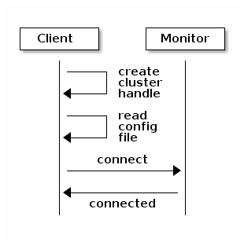
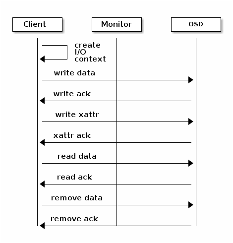

Introduction to librados¶
The Ceph Storage Cluster provides the basic storage service that allows Ceph to uniquely deliver object, block, and file storage in one unified system. However, you are not limited to using the RESTful, block, or POSIX interfaces. Based upon RADOS, the librados API enables you to create your own interface to the Ceph Storage Cluster.
The librados API enables you to interact with the two types of daemons in the Ceph Storage Cluster:
- The Ceph Monitor, which maintains a master copy of the cluster map.
- The Ceph OSD Daemon (OSD), which stores data as objects on a storage node.

This guide provides a high-level introduction to using librados. Refer to Architecture for additional details of the Ceph Storage Cluster. To use the API, you need a running Ceph Storage Cluster. See Installation (Quick) for details.
Step 1: Getting librados¶
Your client application must bind with librados to connect to the Ceph Storage Cluster. You must install librados and any required packages to write applications that use librados. The librados API is written in C++, with additional bindings for C, Python, Java and PHP.
Getting librados for C/C++¶
To install librados development support files for C/C++ on Debian/Ubuntu distributions, execute the following:
sudo apt-get install librados-dev
To install librados development support files for C/C++ on RHEL/CentOS distributions, execute the following:
sudo yum install librados2-devel
Once you install librados for developers, you can find the required headers for C/C++ under /usr/include/rados.
ls /usr/include/rados
Getting librados for Python¶
The rados.py modules provides librados support to Python applications. The librados-dev package for Debian/Ubuntu and the librados2-devel package for RHEL/CentOS will install the python-rados package for you. You may install python-rados directly too.
To install librados development support files for Python on Debian/Ubuntu distributions, execute the following:
sudo apt-get install python-rados
To install librados development support files for C/C++ on RHEL/CentOS distributions, execute the following:
sudo yum install python-rados
You can find the module under /usr/share/pyshared on Debian systems, or under /usr/lib/python*/site-packages on CentOS/RHEL systems.
Getting librados for Java¶
To install librados for Java, you need to execute the following procedure:
Install jna.jar. For Debian/Ubuntu, execute:
sudo apt-get install libjna-java
For CentOS/RHEL, execute:
sudo yum install jna
The JAR files are located in /usr/share/java.
Clone the rados-java repository:
git clone --recursive https://github.com/ceph/rados-java.git
Build the rados-java repository:
cd rados-java ant
The JAR file is located under rados-java/target.
Copy the JAR for RADOS to a common location (e.g., /usr/share/java) and ensure that it and the JNA JAR are in your JVM’s classpath. For example:
sudo cp target/rados-0.1.3.jar /usr/share/java/rados-0.1.3.jar sudo ln -s /usr/share/java/jna-3.2.7.jar /usr/lib/jvm/default-java/jre/lib/ext/jna-3.2.7.jar sudo ln -s /usr/share/java/rados-0.1.3.jar /usr/lib/jvm/default-java/jre/lib/ext/rados-0.1.3.jar
To build the documentation, execute the following:
ant docs
Getting librados for PHP¶
To install the librados extension for PHP, you need to execute the following procedure:
Install php-dev. For Debian/Ubuntu, execute:
sudo apt-get install php5-dev build-essential
For CentOS/RHEL, execute:
sudo yum install php-devel
Clone the phprados repository:
git clone https://github.com/ceph/phprados.git
Build phprados:
cd phprados phpize ./configure make sudo make install
Enable phprados in php.ini by adding:
extension=rados.so
Step 2: Configuring a Cluster Handle¶
A Ceph Client, via librados, interacts directly with OSDs to store and retrieve data. To interact with OSDs, the client app must invoke librados and connect to a Ceph Monitor. Once connected, librados retrieves the Cluster Map from the Ceph Monitor. When the client app wants to read or write data, it creates an I/O context and binds to a pool. The pool has an associated ruleset that defines how it will place data in the storage cluster. Via the I/O context, the client provides the object name to librados, which takes the object name and the cluster map (i.e., the topology of the cluster) and computes the placement group and OSD for locating the data. Then the client application can read or write data. The client app doesn’t need to learn about the topology of the cluster directly.

The Ceph Storage Cluster handle encapsulates the client configuration, including:
- The user ID for rados_create() or user name for rados_create2() (preferred).
- The cephx authentication key
- The monitor ID and IP address
- Logging levels
- Debugging levels
Thus, the first steps in using the cluster from your app are to 1) create a cluster handle that your app will use to connect to the storage cluster, and then 2) use that handle to connect. To connect to the cluster, the app must supply a monitor address, a username and an authentication key (cephx is enabled by default).
Tip
Talking to different Ceph Storage Clusters – or to the same cluster with different users – requires different cluster handles.
RADOS provides a number of ways for you to set the required values. For the monitor and encryption key settings, an easy way to handle them is to ensure that your Ceph configuration file contains a keyring path to a keyring file and at least one monitor address (e.g,. mon host). For example:
[global]
mon host = 192.168.1.1
keyring = /etc/ceph/ceph.client.admin.keyring
Once you create the handle, you can read a Ceph configuration file to configure the handle. You can also pass arguments to your app and parse them with the function for parsing command line arguments (e.g., rados_conf_parse_argv()), or parse Ceph environment variables (e.g., rados_conf_parse_env()). Some wrappers may not implement convenience methods, so you may need to implement these capabilities. The following diagram provides a high-level flow for the initial connection.

Once connected, your app can invoke functions that affect the whole cluster with only the cluster handle. For example, once you have a cluster handle, you can:
- Get cluster statistics
- Use Pool Operation (exists, create, list, delete)
- Get and set the configuration
One of the powerful features of Ceph is the ability to bind to different pools. Each pool may have a different number of placement groups, object replicas and replication strategies. For example, a pool could be set up as a “hot” pool that uses SSDs for frequently used objects or a “cold” pool that uses erasure coding.
The main difference in the various librados bindings is between C and the object-oriented bindings for C++, Java and Python. The object-oriented bindings use objects to represent cluster handles, IO Contexts, iterators, exceptions, etc.
C Example¶
For C, creating a simple cluster handle using the admin user, configuring it and connecting to the cluster might look something like this:
#include <stdio.h>
#include <string.h>
#include <rados/librados.h>
int main (int argc, char argv**)
{
/* Declare the cluster handle and required arguments. */
rados_t cluster;
char cluster_name[] = "ceph";
char user_name[] = "client.admin";
uint64_t flags;
/* Initialize the cluster handle with the "ceph" cluster name and the "client.admin" user */
int err;
err = rados_create2(&cluster, cluster_name, user_name, flags);
if (err < 0) {
fprintf(stderr, "%s: Couldn't create the cluster handle! %s\n", argv[0], strerror(-err));
exit(EXIT_FAILURE);
} else {
printf("\nCreated a cluster handle.\n");
}
/* Read a Ceph configuration file to configure the cluster handle. */
err = rados_conf_read_file(cluster, "/etc/ceph/ceph.conf");
if (err < 0) {
fprintf(stderr, "%s: cannot read config file: %s\n", argv[0], strerror(-err));
exit(EXIT_FAILURE);
} else {
printf("\nRead the config file.\n");
}
/* Read command line arguments */
err = rados_conf_parse_argv(cluster, argc, argv);
if (err < 0) {
fprintf(stderr, "%s: cannot parse command line arguments: %s\n", argv[0], strerror(-err));
exit(EXIT_FAILURE);
} else {
printf("\nRead the command line arguments.\n");
}
/* Connect to the cluster */
err = rados_connect(cluster);
if (err < 0) {
fprintf(stderr, "%s: cannot connect to cluster: %s\n", argv[0], strerror(-err));
exit(EXIT_FAILURE);
} else {
printf("\nConnected to the cluster.\n");
}
}
Compile your client and link to librados using -lrados. For example:
gcc ceph-client.c -lrados -o ceph-client
C++ Example¶
The Ceph project provides a C++ example in the ceph/examples/librados directory. For C++, a simple cluster handle using the admin user requires you to initialize a librados::Rados cluster handle object:
#include <iostream>
#include <string>
#include <rados/librados.hpp>
int main(int argc, const char **argv)
{
int ret = 0;
/* Declare the cluster handle and required variables. */
librados::Rados cluster;
char cluster_name[] = "ceph";
char user_name[] = "client.admin";
uint64_t flags;
/* Initialize the cluster handle with the "ceph" cluster name and "client.admin" user */
{
ret = cluster.init2(user_name, cluster_name, flags);
if (ret < 0) {
std::cerr << "Couldn't initialize the cluster handle! error " << ret << std::endl;
ret = EXIT_FAILURE;
return 1;
} else {
std::cout << "Created a cluster handle." << std::endl;
}
}
/* Read a Ceph configuration file to configure the cluster handle. */
{
ret = cluster.conf_read_file("/etc/ceph/ceph.conf");
if (ret < 0) {
std::cerr << "Couldn't read the Ceph configuration file! error " << ret << std::endl;
ret = EXIT_FAILURE;
return 1;
} else {
std::cout << "Read the Ceph configuration file." << std::endl;
}
}
/* Read command line arguments */
{
ret = cluster.conf_parse_argv(argc, argv);
if (ret < 0) {
std::cerr << "Couldn't parse command line options! error " << ret << std::endl;
ret = EXIT_FAILURE;
return 1;
} else {
std::cout << "Parsed command line options." << std::endl;
}
}
/* Connect to the cluster */
{
ret = cluster.connect();
if (ret < 0) {
std::cerr << "Couldn't connect to cluster! error " << ret << std::endl;
ret = EXIT_FAILURE;
return 1;
} else {
std::cout << "Connected to the cluster." << std::endl;
}
}
return 0;
}
Compile the source; then, link librados using -lrados. For example:
g++ -g -c ceph-client.cc -o ceph-client.o
g++ -g ceph-client.o -lrados -o ceph-client
Python Example¶
Python uses the admin id and the ceph cluster name by default, and will read the standard ceph.conf file if the conffile parameter is set to the empty string. The Python binding converts C++ errors into exceptions.
import rados
try:
cluster = rados.Rados(conffile='')
except TypeError as e:
print 'Argument validation error: ', e
raise e
print "Created cluster handle."
try:
cluster.connect()
except Exception as e:
print "connection error: ", e
raise e
finally:
print "Connected to the cluster."
Execute the example to verify that it connects to your cluster.
python ceph-client.py
Java Example¶
Java requires you to specify the user ID (admin) or user name (client.admin), and uses the ceph cluster name by default . The Java binding converts C++-based errors into exceptions.
import com.ceph.rados.Rados;
import com.ceph.rados.RadosException;
import java.io.File;
public class CephClient {
public static void main (String args[]){
try {
Rados cluster = new Rados("admin");
System.out.println("Created cluster handle.");
File f = new File("/etc/ceph/ceph.conf");
cluster.confReadFile(f);
System.out.println("Read the configuration file.");
cluster.connect();
System.out.println("Connected to the cluster.");
} catch (RadosException e) {
System.out.println(e.getMessage() + ": " + e.getReturnValue());
}
}
}
Compile the source; then, run it. If you have copied the JAR to /usr/share/java and sym linked from your ext directory, you won’t need to specify the classpath. For example:
javac CephClient.java
java CephClient
PHP Example¶
With the RADOS extension enabled in PHP you can start creating a new cluster handle very easily:
<?php
$r = rados_create();
rados_conf_read_file($r, '/etc/ceph/ceph.conf');
if (!rados_connect($r)) {
echo "Failed to connect to Ceph cluster";
} else {
echo "Successfully connected to Ceph cluster";
}
Save this as rados.php and run the code:
php rados.php
Step 3: Creating an I/O Context¶
Once your app has a cluster handle and a connection to a Ceph Storage Cluster, you may create an I/O Context and begin reading and writing data. An I/O Context binds the connection to a specific pool. The user must have appropriate CAPS permissions to access the specified pool. For example, a user with read access but not write access will only be able to read data. I/O Context functionality includes:
- Write/read data and extended attributes
- List and iterate over objects and extended attributes
- Snapshot pools, list snapshots, etc.

RADOS enables you to interact both synchronously and asynchronously. Once your app has an I/O Context, read/write operations only require you to know the object/xattr name. The CRUSH algorithm encapsulated in librados uses the cluster map to identify the appropriate OSD. OSD daemons handle the replication, as described in Smart Daemons Enable Hyperscale. The librados library also maps objects to placement groups, as described in Calculating PG IDs.
The following examples use the default data pool. However, you may also use the API to list pools, ensure they exist, or create and delete pools. For the write operations, the examples illustrate how to use synchronous mode. For the read operations, the examples illustrate how to use asynchronous mode.
Important
Use caution when deleting pools with this API. If you delete a pool, the pool and ALL DATA in the pool will be lost.
C Example¶
#include <stdio.h>
#include <string.h>
#include <rados/librados.h>
int main (int argc, const char argv**)
{
/*
* Continued from previous C example, where cluster handle and
* connection are established. First declare an I/O Context.
*/
rados_ioctx_t io;
char *poolname = "data";
err = rados_ioctx_create(cluster, poolname, &io);
if (err < 0) {
fprintf(stderr, "%s: cannot open rados pool %s: %s\n", argv[0], poolname, strerror(-err));
rados_shutdown(cluster);
exit(EXIT_FAILURE);
} else {
printf("\nCreated I/O context.\n");
}
/* Write data to the cluster synchronously. */
err = rados_write(io, "hw", "Hello World!", 12, 0);
if (err < 0) {
fprintf(stderr, "%s: Cannot write object \"hw\" to pool %s: %s\n", argv[0], poolname, strerror(-err));
rados_ioctx_destroy(io);
rados_shutdown(cluster);
exit(1);
} else {
printf("\nWrote \"Hello World\" to object \"hw\".\n");
}
char xattr[] = "en_US";
err = rados_setxattr(io, "hw", "lang", xattr, 5);
if (err < 0) {
fprintf(stderr, "%s: Cannot write xattr to pool %s: %s\n", argv[0], poolname, strerror(-err));
rados_ioctx_destroy(io);
rados_shutdown(cluster);
exit(1);
} else {
printf("\nWrote \"en_US\" to xattr \"lang\" for object \"hw\".\n");
}
/*
* Read data from the cluster asynchronously.
* First, set up asynchronous I/O completion.
*/
rados_completion_t comp;
err = rados_aio_create_completion(NULL, NULL, NULL, &comp);
if (err < 0) {
fprintf(stderr, "%s: Could not create aio completion: %s\n", argv[0], strerror(-err));
rados_ioctx_destroy(io);
rados_shutdown(cluster);
exit(1);
} else {
printf("\nCreated AIO completion.\n");
}
/* Next, read data using rados_aio_read. */
char read_res[100];
err = rados_aio_read(io, "hw", comp, read_res, 12, 0);
if (err < 0) {
fprintf(stderr, "%s: Cannot read object. %s %s\n", argv[0], poolname, strerror(-err));
rados_ioctx_destroy(io);
rados_shutdown(cluster);
exit(1);
} else {
printf("\nRead object \"hw\". The contents are:\n %s \n", read_res);
}
/* Wait for the operation to complete */
rados_wait_for_complete(comp);
/* Release the asynchronous I/O complete handle to avoid memory leaks. */
rados_aio_release(comp);
char xattr_res[100];
err = rados_getxattr(io, "hw", "lang", xattr_res, 5);
if (err < 0) {
fprintf(stderr, "%s: Cannot read xattr. %s %s\n", argv[0], poolname, strerror(-err));
rados_ioctx_destroy(io);
rados_shutdown(cluster);
exit(1);
} else {
printf("\nRead xattr \"lang\" for object \"hw\". The contents are:\n %s \n", xattr_res);
}
err = rados_rmxattr(io, "hw", "lang");
if (err < 0) {
fprintf(stderr, "%s: Cannot remove xattr. %s %s\n", argv[0], poolname, strerror(-err));
rados_ioctx_destroy(io);
rados_shutdown(cluster);
exit(1);
} else {
printf("\nRemoved xattr \"lang\" for object \"hw\".\n");
}
err = rados_remove(io, "hw");
if (err < 0) {
fprintf(stderr, "%s: Cannot remove object. %s %s\n", argv[0], poolname, strerror(-err));
rados_ioctx_destroy(io);
rados_shutdown(cluster);
exit(1);
} else {
printf("\nRemoved object \"hw\".\n");
}
}
C++ Example¶
#include <iostream>
#include <string>
#include <rados/librados.hpp>
int main(int argc, const char **argv)
{
/* Continued from previous C++ example, where cluster handle and
* connection are established. First declare an I/O Context.
*/
librados::IoCtx io_ctx;
const char *pool_name = "data";
{
ret = cluster.ioctx_create(pool_name, io_ctx);
if (ret < 0) {
std::cerr << "Couldn't set up ioctx! error " << ret << std::endl;
exit(EXIT_FAILURE);
} else {
std::cout << "Created an ioctx for the pool." << std::endl;
}
}
/* Write an object synchronously. */
{
librados::bufferlist bl;
bl.append("Hello World!");
ret = io_ctx.write_full("hw", bl);
if (ret < 0) {
std::cerr << "Couldn't write object! error " << ret << std::endl;
exit(EXIT_FAILURE);
} else {
std::cout << "Wrote new object 'hw' " << std::endl;
}
}
/*
* Add an xattr to the object.
*/
{
librados::bufferlist lang_bl;
lang_bl.append("en_US");
ret = io_ctx.setxattr("hw", "lang", lang_bl);
if (ret < 0) {
std::cerr << "failed to set xattr version entry! error "
<< ret << std::endl;
exit(EXIT_FAILURE);
} else {
std::cout << "Set the xattr 'lang' on our object!" << std::endl;
}
}
/*
* Read the object back asynchronously.
*/
{
librados::bufferlist read_buf;
int read_len = 4194304;
//Create I/O Completion.
librados::AioCompletion *read_completion = librados::Rados::aio_create_completion();
//Send read request.
ret = io_ctx.aio_read("hw", read_completion, &read_buf, read_len, 0);
if (ret < 0) {
std::cerr << "Couldn't start read object! error " << ret << std::endl;
exit(EXIT_FAILURE);
}
// Wait for the request to complete, and check that it succeeded.
read_completion->wait_for_complete();
ret = read_completion->get_return_value();
if (ret < 0) {
std::cerr << "Couldn't read object! error " << ret << std::endl;
exit(EXIT_FAILURE);
} else {
std::cout << "Read object hw asynchronously with contents.\n"
<< read_buf.c_str() << std::endl;
}
}
/*
* Read the xattr.
*/
{
librados::bufferlist lang_res;
ret = io_ctx.getxattr("hw", "lang", lang_res);
if (ret < 0) {
std::cerr << "failed to get xattr version entry! error "
<< ret << std::endl;
exit(EXIT_FAILURE);
} else {
std::cout << "Got the xattr 'lang' from object hw!"
<< lang_res.c_str() << std::endl;
}
}
/*
* Remove the xattr.
*/
{
ret = io_ctx.rmxattr("hw", "lang");
if (ret < 0) {
std::cerr << "Failed to remove xattr! error "
<< ret << std::endl;
exit(EXIT_FAILURE);
} else {
std::cout << "Removed the xattr 'lang' from our object!" << std::endl;
}
}
/*
* Remove the object.
*/
{
ret = io_ctx.remove("hw");
if (ret < 0) {
std::cerr << "Couldn't remove object! error " << ret << std::endl;
exit(EXIT_FAILURE);
} else {
std::cout << "Removed object 'hw'." << std::endl;
}
}
}
Python Example¶
print "\n\nI/O Context and Object Operations"
print "================================="
print "\nCreating a context for the 'data' pool"
if not cluster.pool_exists('data'):
raise RuntimeError('No data pool exists')
ioctx = cluster.open_ioctx('data')
print "\nWriting object 'hw' with contents 'Hello World!' to pool 'data'."
ioctx.write("hw", "Hello World!")
print "Writing XATTR 'lang' with value 'en_US' to object 'hw'"
ioctx.set_xattr("hw", "lang", "en_US")
print "\nWriting object 'bm' with contents 'Bonjour tout le monde!' to pool 'data'."
ioctx.write("bm", "Bonjour tout le monde!")
print "Writing XATTR 'lang' with value 'fr_FR' to object 'bm'"
ioctx.set_xattr("bm", "lang", "fr_FR")
print "\nContents of object 'hw'\n------------------------"
print ioctx.read("hw")
print "\n\nGetting XATTR 'lang' from object 'hw'"
print ioctx.get_xattr("hw", "lang")
print "\nContents of object 'bm'\n------------------------"
print ioctx.read("bm")
print "Getting XATTR 'lang' from object 'bm'"
print ioctx.get_xattr("bm", "lang")
print "\nRemoving object 'hw'"
ioctx.remove_object("hw")
print "Removing object 'bm'"
ioctx.remove_object("bm")
Java-Example¶
import com.ceph.rados.Rados;
import com.ceph.rados.RadosException;
import java.io.File;
import com.ceph.rados.IoCTX;
public class CephClient {
public static void main (String args[]){
try {
Rados cluster = new Rados("admin");
System.out.println("Created cluster handle.");
File f = new File("/etc/ceph/ceph.conf");
cluster.confReadFile(f);
System.out.println("Read the configuration file.");
cluster.connect();
System.out.println("Connected to the cluster.");
IoCTX io = cluster.ioCtxCreate("data");
String oidone = "hw";
String contentone = "Hello World!";
io.write(oidone, contentone);
String oidtwo = "bm";
String contenttwo = "Bonjour tout le monde!";
io.write(oidtwo, contenttwo);
String[] objects = io.listObjects();
for (String object: objects)
System.out.println(object);
io.remove(oidone);
io.remove(oidtwo);
cluster.ioCtxDestroy(io);
} catch (RadosException e) {
System.out.println(e.getMessage() + ": " + e.getReturnValue());
}
}
}
PHP Example¶
<?php
$io = rados_ioctx_create($r, "mypool");
rados_write_full($io, "oidOne", "mycontents");
rados_remove("oidOne");
rados_ioctx_destroy($io);
Step 4: Closing Sessions¶
Once your app finishes with the I/O Context and cluster handle, the app should close the connection and shutdown the handle. For asynchronous I/O, the app should also ensure that pending asynchronous operations have completed.
C Example¶
rados_ioctx_destroy(io);
rados_shutdown(cluster);
C++ Example¶
io_ctx.close();
cluster.shutdown();
Python Example¶
print "\nClosing the connection."
ioctx.close()
print "Shutting down the handle."
cluster.shutdown()
PHP Example¶
rados_shutdown($r);